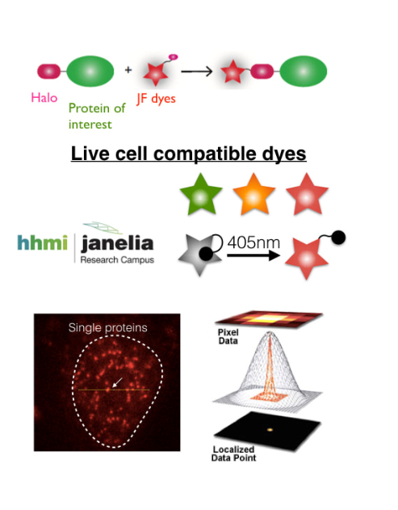
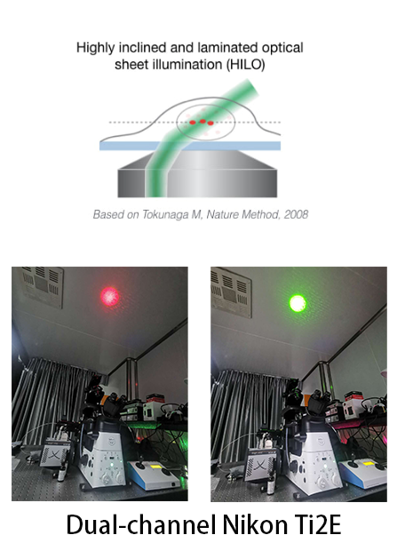
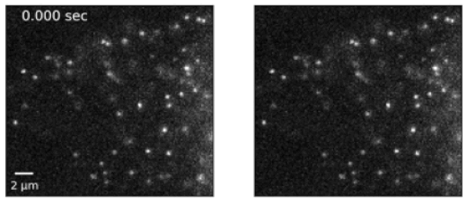

Transcription Regulation at Single Molecule Level
OUR ASPIRATION
Cells with the same genomic sequences can have distinct gene expression profiles and generate numerous cell types and states. The overarching interest of the laboratory is studying the molecular events that collaboratively turn on or off genes, i.e. transcription regulation, in the context of chromatin in mammalian cells. Nuclear proteins are the major players in decoding the genome, i.e. controlling transcription activity. They include DNA-binding transcription factors, epigenetic regulators, and chromatin structural proteins that organize chromatin in 3D and so on, which all act on selective regions of the genome in cell type specific manners. We strive to understand the molecular mechanisms by which specificity is achieved. We are an interdisciplinary team particularly interested in depicting the kinetics and functional specificity of protein regulators interacting with the chromatinized DNA. We use a combination of biochemistry, genomics and single molecule microscopy methods to depict their sequence specificity, association with chromatin states, single molecule dynamics and super-resolution spatial distribution in the living cells. Such cross-disciplinary approaches can give us an integrated understanding on how cell-specific and tissue-specific transcription is achieved in normal cell growth and differentiation, and is misregulated in human diseases.
Research Interest
transcription regulation, chromatin function, higher order chromatin organization, cellular differentiation, stem cell, reprogramming, single molecule dynamics, single molecule imaging
OUR METHODOLOGY
Single molecule tracking
|
Fluorescence microscopy
|
Biochemistry & Epigenomics
|
CRISPR genome editing
|
Single molecule tracking in living cells
|
Using single-molecule imaging technologies, we are able to visualize individual fluorescently-tagged proteins in living cells. We are able to watch the dynamic movement of transcription factors and their interaction with chromatin as they act on gene expression. This allows us to profile the biophysical properties of transcription factors and investigate its mechanism of action. |
 |  |
Examples of trajectories of single transcription factors. 7.5ms/frame
Stably-bound single transcription factors. Movie is played in realtime. Left: fluorescence movie. Right: Localization of single molecules.

Our Projects
* Please contact Wulan to discuss details of the projects below.
Single Molecule Dynamics Of Transcription Regulatory Factors In Living Cells
Transcription regulation is a dynamic process occurring in the confined space of cellular nucleus in living cells. What are the timescales by which factors locate and act on their specific targets? What are the factors promoting or constraining search of targets? What is the spatial distribution of chromatin interacting factors since chromatin is heterogenous in the nucleus? Do factors within a complex act on their targets synchronously or independently in living cells? There are many same kind of questions to be answered. To probe these questions, we systematically use single molecule fluorescence microscopy to image and track specific nuclear proteins in the living cells. We use and develop quantitative analyses to measure kinetic traits of protein factors such as diffusion constants, association rates, dissociation rates, clustering, colocalizations and so on.
Mechanisms Of Pioneer Transcription Factor Action On Chromatin
Chromatin accessibility is a common mechanism to control action of DNA-binding transcription factors, with most transcription factors have no or weak interaction with nucleosomal DNA targets. A selection of transcription factor appear to have the capability to access nucleosomal DNA targets, named pioneer transcription factor, and are often function during cell fate transition such as differentiation and cell reprogramming. We are currently study the molecular features of pioneer transcription factors and investigate mechanisms by which pioneer transcription factor access nucleosomes and create open regions on chromatin.
Mechanisms Of Chromatin Organization Factor Action On Chromatin
The spatial organization of chromatin in 3D is a key regulation mechanism for transcription activity. We focus on the protein factors that contribute to this higher order chromatin organization, and investigate mechanisms by which they establish specific long range regulatory interactions and topologically associated domains.
Pluripotency, Differentiation, Reprogramming And Embryo Development
Fate-changing transcription factors play essential roles in development and reprogramming. We employ cell culture systems, including mESC, hESC, primary fibroblast, and cancer cell lines, as well as mouse early embryos to investigate mechanisms of transcription regulation and cell fate regulation.